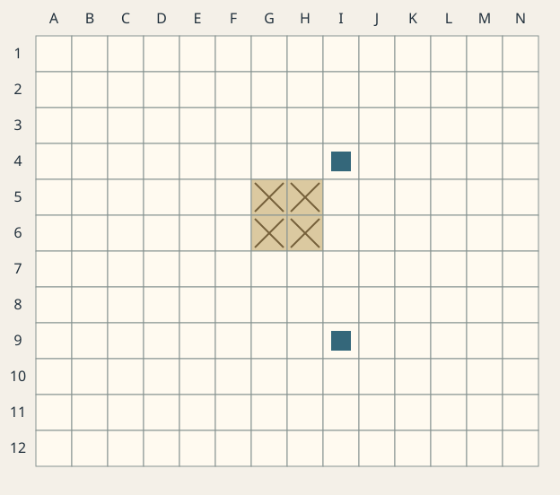

Одинаковые правила, разная история
Все карты совпадают с сеткой нативного пакета: 14 × 12, клетка — 5 футов. G5/H5/G6/H6 — трудная местность; I4/I9 — половинное укрытие. Остальные детали описания декоративны, пока ведущий не изменил поле штатно.
Расстановка и параметры
Герои по порядку: B3, B4, B5, B6, C3, C4, C5. Противники: L3, L4, L5, L6, M3. Используйте только нужное число фигур.
Для 3 / 4 / 5 / 6 / 7 игроков: 2 / 3 / 3 / 4 / 5 противников, здоровье каждого 12 / 14 / 16 / 18 / 20. Защита 12; скорость 20 футов; одна ближняя атака +3, 1d4+1 дробящего урона, досягаемость 5 футов.
Враги — простая поддерживаемая модель. Мирные решения и ограничения сцены описаны отдельно; ведущий подтверждает их результат. После первого раунда напомните пути переговоров или отступления. Встречи не запускаются автоматически.
Осколки лишнего эха
Только по явному выбору игроков и подтверждению ведущего: труппа решает провести быстрый активный вынос рамки через площадку с уже созданными звучащими осколками. Спокойный путь по настилу доступен всегда; встреча не начинается автоматически.
Цель и выходы
Донести пустую монтажную рамку к противоположному краю и сохранить выбранный рисунок на карточке. Побеждать все фигуры не требуется. Можно отступить по настилу, оставить рамку или объявить остановку; обязательные улики остаются доступны.
Выбрать карточку паузы и дать Левону спокойно убрать осколки, затем перенести рамку по настилу. Либо попросить обход и двигаться по одному. Это описательный путь без боя и без обязательной проверки; он даёт тот же доступ к фактуре.
Поведение противников
Неживая округлая пластина из материального эха, которая толкается как непослушная декорация. Это сценический образ обычного противника, а не новый тип автоматических правил.
Фигуры сближаются с ближайшим участником, используют обычное перемещение и одну атаку ближнего боя +3, урон 1d4+1; AC 12. Не блокируют белую дверь и не получают новых заклинаний, захватов или автоматических эффектов от музыки.
Размер группы
3 игрока: 2 противника по 12 HP; 4: 3 по 14 HP; 5: 3 по 16 HP; 6: 4 по 18 HP; 7: 5 по 20 HP. У всех AC 12, одна атака +3 на 1d4+1. Для 3 игроков объедините перенос и удержание формы; для 6–7 собирайте намерения всех до разрешения действий.

↔ На узком экране прокрутите карту вбок. Полный размер доступен по ссылке ниже.

Поле 14×12, столбцы A–N, строки 1–12. Только G5, H5, G6, H6 — difficult: мягкая россыпь звукового материала. Только I4 и I9 — half-cover: две низкие матовые рамы. Остальные детали декоративны и не дают укрытия или трудной местности без изменения фактического поля ведущим. Герои начинают B3, B4, B5, B6, C3, C4, C5; противники L3, L4, L5, L6, M3 по размеру группы.
Брызги повторения
После добровольного решения сыграть динамическое укрощение уже созданных брызг ведущий отдельно подтверждает встречу. При выборе спокойного монтажа воды боя нет; карта изображает плоскую сценическую площадку у моря, не вертикальный бой.
Цель и выходы
Провести пустую лодочную раму через площадку к выбранному краю. Разбить все брызги не обязательно. Отступление на белый настил, остановка рисунка или отказ от высокой воды завершают попытку без утраты доступа к следующему вечеру.
Дори предлагает распустить рисунок пустой карточкой, а затем заново создать низкую полосу или высокую волну. Можно также провести раму по сухому настилу. Отказ от боя не предрешает художественный выбор и не стоит улики.
Поведение противников
Прозрачная округлая форма с серебряной кромкой, неживой кусок звучащей воды. Встреча использует обычные правила ближнего боя.
Брызги идут к ближайшему участнику обычным перемещением и выполняют одну атаку +3, урон 1d4+1; AC 12. Не двигают персонажей автоматически, не тонут и не включают таймер настоящего времени.
Размер группы
3 игрока: 2 противника по 12 HP; 4: 3 по 14 HP; 5: 3 по 16 HP; 6: 4 по 18 HP; 7: 5 по 20 HP. У всех AC 12 и одна атака +3 на 1d4+1. Малой группе дайте одну общую раму, большой — связанные действия у её двух краёв без дополнительных правил боя.
↔ На узком экране прокрутите карту вбок. Полный размер доступен по ссылке ниже.

Поле 14×12 (A–N, 1–12) лежит горизонтально на настиле. Только G5, H5, G6, H6 — difficult, разложенная мягкая водяная лента; только I4 и I9 — half-cover, две низкие стойки. Все прочие лодки, волны и рисунки декоративны, если ведущий не редактирует фактическое поле. Старт героев B3, B4, B5, B6, C3, C4, C5; старт противников L3, L4, L5, L6, M3.
Дуги упрямой репризы
Только если игроки хотят разыграть активную ловлю выпуклого эха и ведущий подтвердил подготовленную встречу. При выборе спокойного разведения желобов или паузы встреча не активируется.
Цель и выходы
Достичь бокового выхода с рамкой для одного выбранного завитка либо освободить путь уходом с площадки. Не требуется уничтожить все дуги. Герои могут прекратить повтор, отступить или объявить остановку; решение оставить репризу обсуждается после любого исхода.
Отвести поток по широкому желобу, снять повтор пустой карточкой или попросить Ена показать спокойный боковой путь. Все три решения доступны без обязательного броска. Снятая реприза исчезает из этой версии, но может быть заново сочинена позже.
Поведение противников
Неживой блестящий полукруг материального эха, который мешает проходу лёгкими толчками. Он не хранит душ, воспоминаний или чужих произведений.
Дуги сближаются с ближайшей фигурой и используют обычную атаку ближнего боя +3, урон 1d4+1; AC 12. Они не копируют способности героев, не создают новых противников посреди боя и не получают дополнительных музыкальных эффектов.
Размер группы
3 игрока: 2 противника по 12 HP; 4: 3 по 14 HP; 5: 3 по 16 HP; 6: 4 по 18 HP; 7: 5 по 20 HP. Для всех AC 12, одна атака +3 на 1d4+1. При 6–7 игроках распределите задачи пути, рамки и наблюдения до первого хода; при 3 NPC не принимает решающего художественного решения.
↔ На узком экране прокрутите карту вбок. Полный размер доступен по ссылке ниже.

Сетка 14×12: A–N, 1–12. Только G5, H5, G6, H6 — difficult, мягкие ленты желоба. Только I4 и I9 — half-cover, два непрозрачных низких борта. Остальные арки и декоративные отметки не имеют механического эффекта без изменения поля ведущим. Герои B3, B4, B5, B6, C3, C4, C5; противники L3, L4, L5, L6, M3 согласно численности.